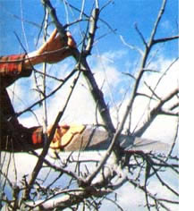
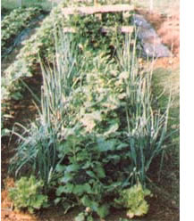

Beltsville Freebies
July/August 1983
By Peter Hemingson
Summer's sun shimmers. Baked in heat, you sucker tomatoes . . . handpick bean beetles . . . weed by fall crop shoots . . . and side-dress budding peppers. The first drops of a thundershower hiss as they strike shingle and asphalt.
Toil till the storm bursts full force . . . then sprint for cover, find a cool spot, and feed your mind with a good garden book.
Imagine a docile insect whose sole aim in life seems to be pollinating fruit trees .. . and which does so almost 80 times as efficiently as the common honeybee Well, you've just conjured up a mental image of an important Insect recently introduced from Japan: the horn faced bee. Dr. Suzanne Batra, of the USDA Beneficial Insect Introduction Laboratory at Beltsville, Maryland, has been studying the little critters for several years . .. and her enthusiasm for their ability as pollinators is boundless. It seems that the horn faced bee loves the nectar and pollen of fruit trees (peaches, plums, pears, and especially-apples), while the common honeybee often would rather visit a dandelion than the pink and white blossoms of a McIntosh. Horn faced bees are not honey producers, but they seem perfectly designed for their role as pollinators. They emerge from winter dormancy when the cherry trees bloom ... mate, lay eggs, and collect nectar and pollen-with a passion-for four to six weeks . . . and then die! All summer long, the new larvae prow inside the reeds (or cardboard tubes) the insect uses as a nest. Shortly after this next generation evolves into adults in the late summer or early fall, the bees still in the nests) become dormant, remaining quiet all winter long. (The bees have a freezing requirement similar to that of hardy plants.) Finally, in the spring as the cherries bloom again-the little insects emerge and go to work.
HELP FROM MOTHER'S READERS
A good deal has been learned about the horn faced bee, but additional information concerning their adaptation to differing climates is still needed. Dr. Batra would like to give small colonies of the insects to some of MOTHER's readers ... those who meet certain requirements and who would agree to report back on their successes (or failures). She's Interested in folks who (1) are organic growers (sprays -especially Serving, but others as well-devastate the bee colonies) . . . (2) have fruit tree orchards ranging in size from a couple of trees to several acres . .. and (3) have kept bees In the past, or are familiar with beekeeping. If you'd like to receive a colony of horned bees, drop a postcard to Dr. Suzanne Batra, Beneficial Insect Introduction Laboratory, Dept. TMEN, Building 417, USDA-BARCE, Beltsville, Maryland 20705. Mention the size and kind of your orchard, and give information on your beekeeping experience. Also, describe your climate: Horned bees thrive in the moisture of the eastern half of the country as well as the coastal Pacific Northwest, but are unsuited to the dry western states. This fall, Dr. Batra will contact the readers she has chosen to participate in her experiment, and dormant bees will be shipped in late fall or winter. And don't be disappointed if you're not selected: The people at Beltsville will be using the list Dr. Batra compiles to seek out test sites for other experiments, too. If you are fortunate enough to flat some bees, though, prepare to bet a bumper crop of apples!
BARC STRIPPED?
If Dr. Batra's horned bees captured your interest, or if you're concerned as to whether Dr. Robert Schroder's work on natural controls for the Colorado potato beetle will continue unimpeded, or if you want to make sure that Howard Kerr's innovative (and enormously important) small farm program will retain access to scientific personnel of all disciplines, it's time to make your wishes known! According to Science magazine, a major shift in administration policy on public lands may threaten the continued existence of this nation's Beltsville Agricultural Research Center (BARC) in Maryland. It seems that the sale of at least some of Beltsville's "surplus" acreage is being contemplated by the General Services Administration as a device to reduce the national debt . . . a highly questionable means to a rather improbable goal. While the immediate threat is to just past of the center, many people are of the opinion that GSA will chip away at the facility until BARC's very existence is no longer justified.
Of course, if the widely respected center is to be turned into acres of suburban condominiums (BARC is currently one of the few greenbelt areas in the suburbs north of Washington, D.C.), it would take years to reestablish elsewhere the experiments already in progress at BARC. Worse yet, the invaluable cross fertilization of scientific disciplines now occurring would be lost altogether. And it's practically a certainty that the programs for small and organic growers would "fall between the cracks" with Beltsville's demise.
BARC's preservation is vital to all of us, since we all benefit from the basic research conducted there. To help preserve the Beltsville Agricultural Research Center, write to your Representative, suggesting support of Rep. Steny Hoyer's bill (HR 1688) . . . to your Senators, in support of S 423, which was introduced by Senators Mathias and Sarbanes . . . and to the General Services Administration's Federal Property Resources Service (Dept. TMEN, 18th and F Streets N.W., Washington, D.C. 20405), requesting that none of Beltsville's land be declared surplus.
WHO DO?ZOODOO!
One of the most unusual (as well as catchily named) soil amendments I've run across is being test-marketed by the Bronx Frontier Development Corporation, a community development group in New York's poverty-shocked South Bronx. ZooDoo is a wholly organic soil-enricher made from composted leaves, straw bedding, and (ready for this?) manure from herbivores at the famous Bronx Zoo. Jack Flanagan, president of Bronx Frontier (he quit his police officer's job in New York's 41st Precinct-"Fort Apache"-to help the community by starting a gardening program), claims that the compost is terrific fertilizer. If you'd like to put an elephant in your eggplant, information on availability (so far, just in the New York area . . . including Blooming dales!) of the product and details about the composting program can be obtained from The Bronx Frontier Development Corporation, Dept. TMEN, 1080 Leggett Avenue, The Bronx, New York 10474.
MUSHROOMING INTEREST
Rejoice, you friends of fungi! These days, an increasing number of mushroom-growing kits are becoming available . . . and in the not-too-distant future, you should be able to cultivate some of the more exotic (and flavorful) fungi.
You're probably already familiar with the kits for growing Agaricus bisporus, the common button mushroom . . . they're shown in many seed catalogs. Now, several of those mail order firms also offer setups that allow you to sample the pleasures of growing the oriental Shiitake mushroom, Lentinus edodes. Most of these kits will produce about a pound or two of the delectable fungi, but if you've developed a fondness for Shiitake, you'll want to move up to growing larger quantities. Enter firms
such as Bob Harris's and Jennifer Snyder's Mushroom people (Dept. TMEN, P.O. Box 158, Inverness, California 94937). These folks offer a bag of Shiitake mushroom spawn plugs enough to inoculate 20 to 50 logs that are one to three feet long-for $15, postpaid. (Discount prices are available with larger orders.) You can figure on harvesting between 1-112 and 3 pounds of tasty fungi per log . . . which (at the wholesale price of $3.OC per pound) means you'll have at least $90 worth of mushrooms! Bob has also developed a method that shortens the growing period from two years to as short a time as four months. You can find out about that process in his nicely illustrated pamphlet called "S hiitake Gardening" ($3.00, postpaid).
Meanwhile, in Texas a
transplanted Frenchman is starting up the American truffle industry. Yes, the "black diamonds" (so prized by gourmets that the fungi sell for as much as $500 a pound!) have finally been cultivated . . . although the seven-year crop has so far fruited only in France. Frangois Picart, formerly a snail grower, has established Agri-Truffle . . . a company devoted to marketing oak and filbert seedlings whose roots have been mycorrhized by the spore of Tuber melanosporum, the black truffle. In order to thrive, the delicious fungi require a well-drained, calcareous soil with a pH above 7.2. Organic matter should be low between 2% and 8%-and the climate mild, With the soil freezing no deeper than three inches. Currently, inoculated seedlings (in minimum lots of ten) cost about $14 each from AgriTruffle (Dept. TMEN, Star Route 1A, Box 45A, Dripping Springs, Texas 78620) or $12 apiece
from Mushroom people. Since no truffles have fruited in this country yet, though, it might not be a bad idea to send for an introductory packet ($2.00 postpaid from Agri-Truffle) before you order any "trees". This informative kit even tells how to train pigs (or-less colorfully dogs) to sniff out the earthy gems!
Also tantalizingly just over the horizon is the prospect of cultivated morels, to my way of thinking among the most delicious mushrooms. (If I sound a bit smug, I am: The fungi grow by serendipity under my apple trees,) In 1981, Ronald Power reported success in cultivating morels . . . and his claim has been validated by a team of mycologists at Michigan State University. Commercial spore production is a few years away, but the possibility alone should be enough to make true morel-lovers smack their lips in anticipation.
READING FOR A SUMMER DAY
A number of splendid garden books have piled up since we last had a chance to talk about our body of growing information. Several titles have arrived from HP Books (all are available for the list price plus $1.00 for shipping and handling from HP Books, Dept. TMEN, P.O. Box 5367, Tucson, Arizona 85703). The one I found most immediately useful is the superb Pruning by Dr. Robert Stebbins and Michael MacCaskey. Loaded with color photographs and crammed with line drawings, this informative volume covers ornamental and fruit trees along with shrubs and roses. In clear, non technical language the authors tell you how (and why) to prune for beauty, fullness, and proper growth. They also treat remedial pruning as well as I've ev er seen it done. The price is $7.95. Other recent HP titles, all profusely illustrated and meeting the high standards of the series, include Bulbs ($7.95) . . . Spas & Hot Tubs ($7.95) . . . Hedges, Screens and Espaliers ($9.95) . . . Fences, Gates and Walls ($9.95) . . . and Patios & Decks ($9.95). There wasn't one I didn't like.
If you missed the delightful (and very useful) series of gardening annuals published by Yankee magazine over the last few years, you've got a second chance. A selection of the best material from that series has now been brought together under the title The Gardener's Adviser ($8.95 at most bookstores). It's a thoroughly enjoyable collection. Two other tomes at the top of my list come from Garden Way. The first is Dick Raymond's gorgeous Joy of Garden ing ($14.95), which matches the high quality of Raymond's previous works and is a companion to that master gardener's television series. The second work is Roses Love Garlic ($6.95), Louise Riotte's sequel to her well-known Carrots Love Tomatoes ($6.95). The work is laid out di ctionary-style and has some unique features, including a chapter titled
"Night Bloomers for Daytime Workers" (welcome to those who usually get to see their gardens only on weekends!). All three volumes are available from Mother's Bookshelf's (105 Stoney Mountain Road, Hendersonville, North Carolina 28791) for their list prices plus $1.25 shipping and handling for one or two books ($2.00 for three or more).
Finally, it's a pleasure to report that The Avant Gardener, that essential horticultural newsletter, has published a special supplement on integrated pest management. The eight-page report is available for $1.50 postpaid from The Avant Gardener, Dept . TMEN, P.O. Box 489, New York, New York 10028. They'll include a free sample copy of the regular newsletter with each order.
 |
 |
 |